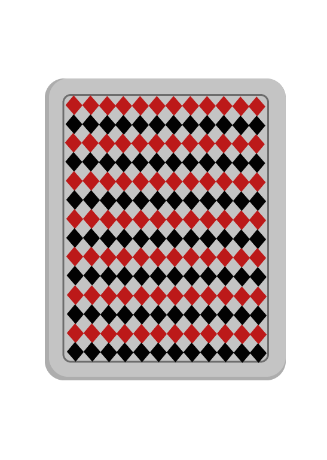

<!--
  Generated template for the CartaJugadorPage page.

  See http://ionicframework.com/docs/components/#navigation for more info on
  Ionic pages and navigation.
-->
<ion-header>

  <ion-navbar color="dark">
    <ion-title>CASCADA</ion-title>
    <button id="btnMenu" ion-button color="calm" round outline (click)="volver()">VOLVER</button >

  </ion-navbar>

</ion-header>


<ion-content padding>


  <ion-card>
    <div>Debes de voltear la carta</div>
    
    <div class="card-title">


      <div  id="nombreCarta" text="" hidden text-center>
        <ion-icon name="logo-freebsd-devil"></ion-icon>
        {{cartas?.data[cont][0]["numero"]}} {{cartas?.data[cont][0]["palo"]}}
      </div>
    </div>
    <div id="jugador" class="card-subtitle" hidden text-center>
      <ion-icon name="person"></ion-icon>
      {{cartas?.data[cont][2]["apodo"]}}

    </div>
    <div id="reglaCarta" class="card-subtitle" hidden text-center>
      <ion-icon name="beer"></ion-icon>
      {{cartas?.data[cont][1]["descripcion"]}}
      <br/>
      <button   id="btnDetalle"ion-button color="calm" icon-beer round outline (click)="presentAlert()" ><ion-icon name="eye"></ion-icon></button >

    </div>


    <button id="btnVirar" ion-button color="calm" round outline (click)="cambiar()">VOLTEAR</button >


    <button id="btnVoltear" ion-button color="royal" round outline (click)="sumar()" [disabled]="!isenabled"  >SIGUIENTE</button >


  </ion-card>

</ion-content>
